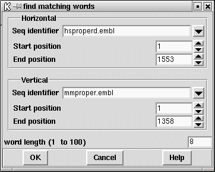

The find matching words routine finds runs of identical characters in the sequence. Its main value is speed, being hundreds of times faster than the find similar spans function. It is of course not very sensitive but is useful for long DNA sequences.

The dialogue allows the horizontal and vertical sequences and their ranges to be selected ( see section Selecting a sequence). The word length is the minimum number of consecutive matching characters. All runs of identical characters that are at least as long as the word length will produce a line on the SPIN Sequence Comparison Plot of length proportional to the actual word length ( see section SPIN Sequence Comparison Plot).
Further operations available for find matching words are:
horizontal EMBL: hsproperd vertical EMBL: mmproper word length 8 Number of matches 140
Positions 162 h 4 v and length 14 ttcacccagtatga Positions 225 h 67 v and length 18 gaagactgctgtctcaac Positions 509 h 118 v and length 8 ctctgtca Positions 276 h 118 v and length 9 ctctgtcag Positions 288 h 130 v and length 8 tgcaggtc Positions 626 h 131 v and length 8 gcaggtct Positions 1208 h 144 v and length 8 atggtcag
score 8 probability 2.06e-05 expected 43 observed 140 score 9 probability 5.35e-06 expected 11 observed 67 score 10 probability 1.39e-06 expected 3 observed 45 score 11 probability 3.60e-07 expected 1 observed 35 score 12 probability 9.35e-08 expected 0 observed 22 score 13 probability 2.43e-08 expected 0 observed 18 score 14 probability 6.30e-09 expected 0 observed 17 score 15 probability 1.63e-09 expected 0 observed 11 score 16 probability 4.24e-10 expected 0 observed 9 score 17 probability 1.10e-10 expected 0 observed 9 score 18 probability 2.86e-11 expected 0 observed 8 score 19 probability 7.42e-12 expected 0 observed 6 score 20 probability 1.93e-12 expected 0 observed 5 score 21 probability 5.00e-13 expected 0 observed 3 score 22 probability 1.30e-13 expected 0 observed 2 score 23 probability 3.37e-14 expected 0 observed 2 score 24 probability 8.74e-15 expected 0 observed 2